Hola, soy Nicolás. Soy lo que se llama un cacharrero. Soy ingeniero y me interesa el funcionamiento de las cosas. Disfruto armando y desarmando aparatos para saber cómo funcionan y también disfruto averiguando cómo podemos usar los recursos disponibles en comunidad.
¿Qué es un bicigenerador?
Un bicigenerador es un sistema que convierte la energía mecánica de una bicicleta en energía eléctrica. Básicamente, transforma el movimiento de pedaleo en electricidad, permitiendo generar energía para diferentes propósitos, como cargar dispositivos electrónicos o incluso alimentar sistemas de iluminación. (Fuente: Ecologismos)
¿Para qué sirve?
Esta solución es una explicación paso a paso de cómo comprar, y ensamblar, un sistema de alimentación de electricidad mediante una bicicleta. Lo calculamos para que un computador y un router durante te funcionen durante 3 horas, que es lo que suele durar una sesión de SOLE.
¿Qué necesitas?
- Dinero para comprar baterías, cables, un inversor de corriente y un controlador.
- Energía para pedalear.
- Una bicicleta vieja.
- Cuidado y mucho ánimo para ensamblar el sistema.
- Soporte para hacer fija la bicicleta.
¿Cómo hacerlo?
Paso 1 → Calcula el gasto energético
Leer el consumo energético que necesito. En este caso necesitamos alimentar un computador portátil y un router durante 3 horas. Esto definirá la capacidad que debe tener nuestro sistema y la cantidad de horas que debemos pedalear para poder generar la electricidad necesaria.
- Un portátil consume 120W/h
- Un router consume 15w/h
Ahora, debemos calcular el gasto energético necesario para el sistema. Puedes consultar esta información en el respaldo de los dispositivos o en los cargadores de los mismos. Para un SOLE, por ejemplo son necesarias 3 horas:
- Portátil: 120W/h de consumo por 3 horas son 360W
- Router: 15W/h de consumo por 3 horas son 45W
El resultado de la suma de estos dos es 405W, en 3 horas. Si dividimos 405/3h, tenemos 135 W/h
La bici máquina podrá generar hasta 200 watts/hora, pedaleando a una velocidad media y hasta 400 watts/hora a una velocidad alta.
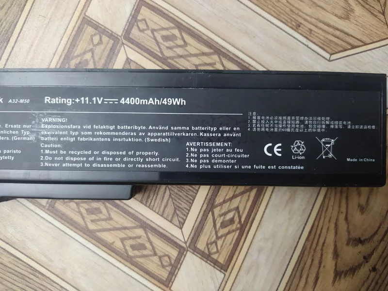
Paso 2 → Estimar las características de los equipos complementarios.
Recuerda que para ensamblar cualquier sistema de generación eléctrica necesitas estos componentes:
Un generador de electricidad Es todo dispositivo capaz de capturar y transformar algún tipo de energía (mecánica, solar, térmica, hidráulica, química) en energía eléctrica. En este caso, es la bicicleta combinada con un motor eléctrico y un soporte estático, pero también podemos pensar en un generador a gasolina, un panel solar, una turbina Pelton, una turbina eólica, etc.
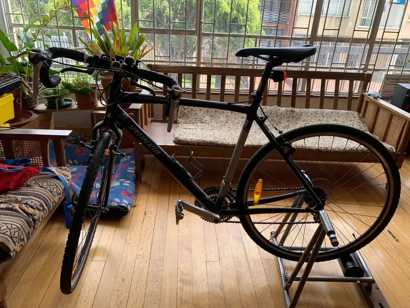
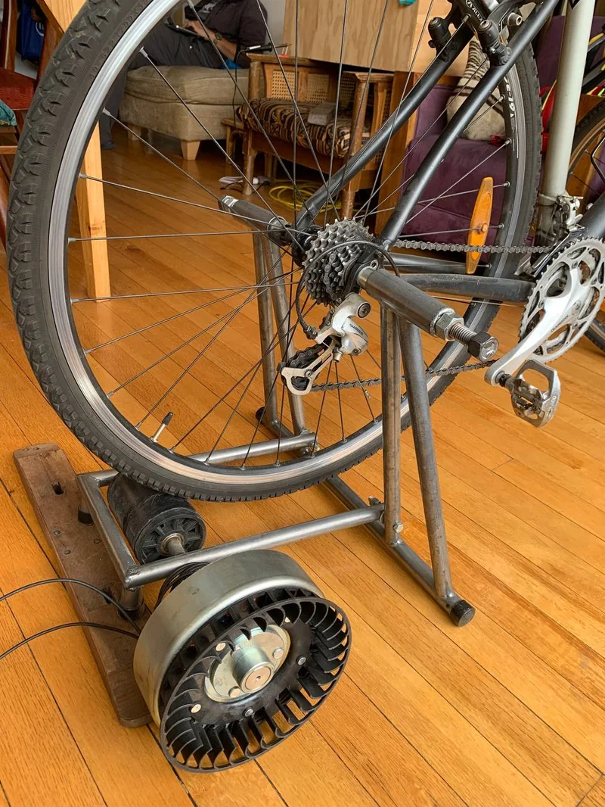
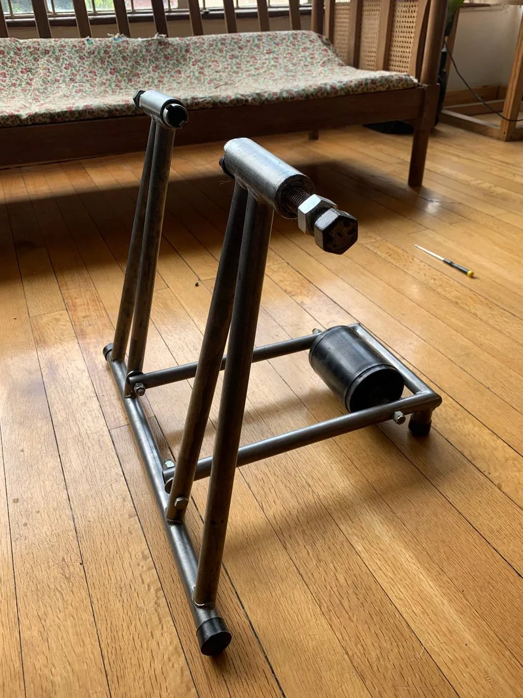
Un controlador de carga Su función es regular el flujo de energía que va del motor a las baterías, controla tanto la intensidad como el voltaje. Esto con el objetivo de que la recarga sea en condiciones óptimas, no dañe las baterías y alargue su vida útil.
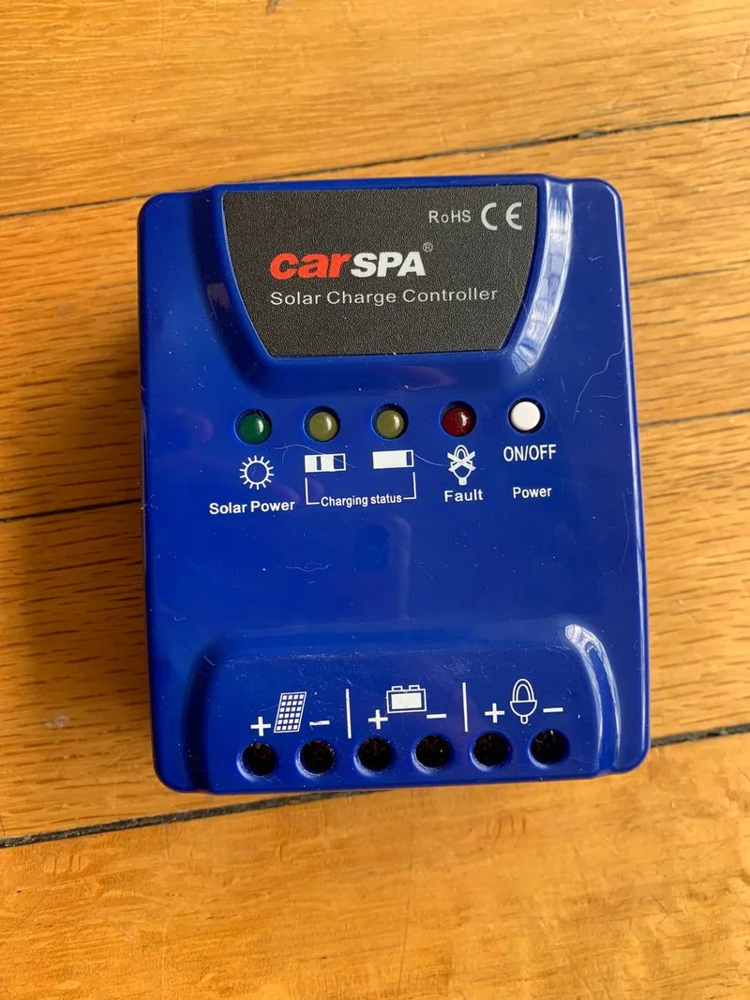
Una batería Almacena la energía generada en forma de energía química y la libera después como corriente continua de forma controlada.
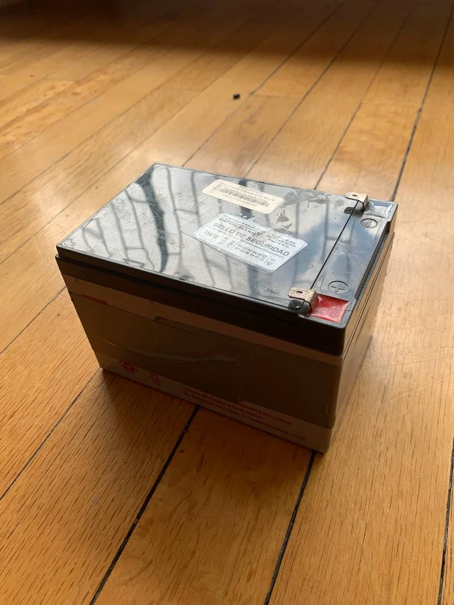
Un inversor de corriente Convierte la corriente continua que sale de la batería a corriente alterna para poder conectar nuestros equipos.
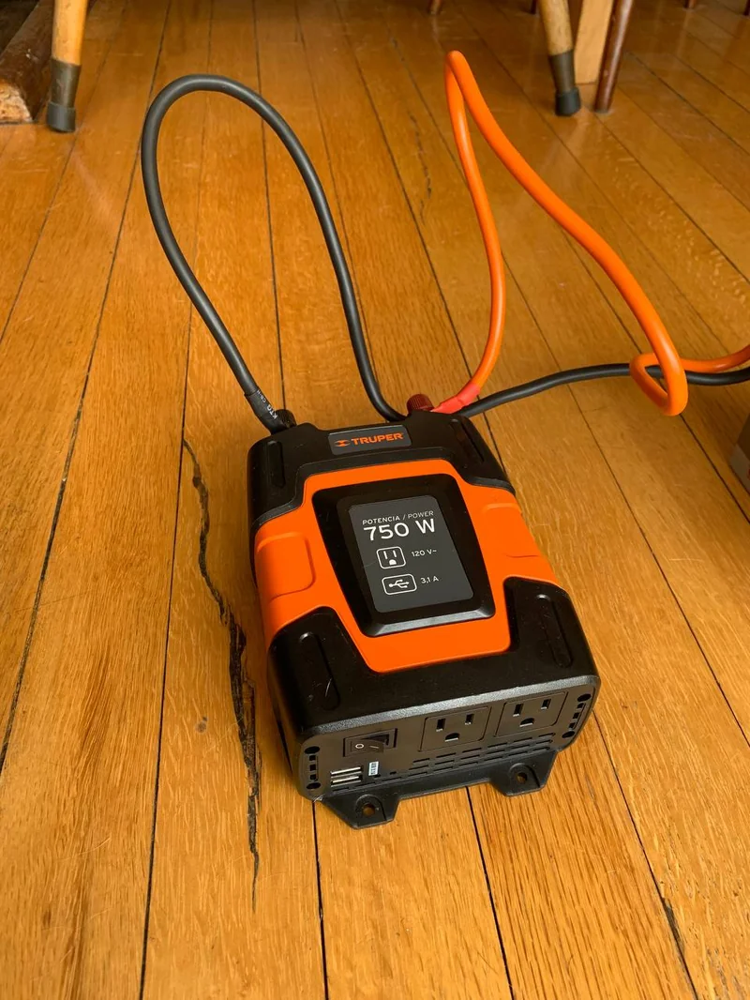
Cable solar y accesorios Es un cable eléctrico lo suficientemente robusto para poder transmitir la energía eléctrica que generamos. Además, podemos comprar unos conectores en plástico que ayudan a que las conexiones sean más robustas y no se desconecten fácilmente.
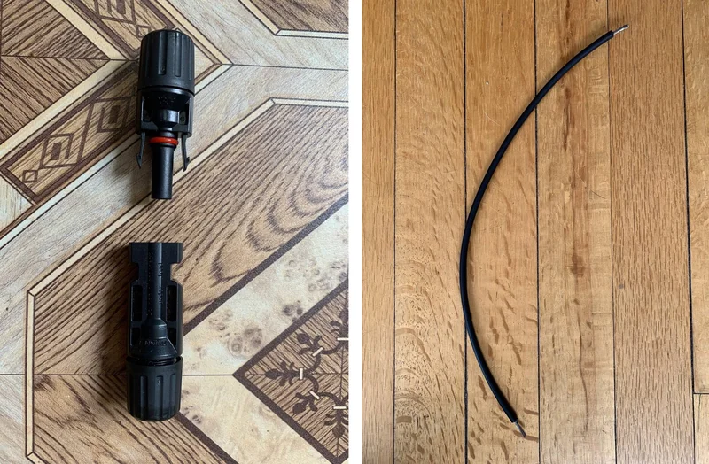
Como noto, acá se puede utilizar todo el mismo sistema complementario del ensamblaje para un sistema de paneles solares. Por esta razón haremos los cálculos de los equipos como si fueran para neutro sistema de paneles solares, ya que van a tener la misma capacidad.
Paso 3 → ¿Cómo se estima las características de una batería?
Habíamos hablado de un consumo energético de 405W en 3 horas o 135 W/h. Además del consumo total diario, necesitamos:
- Días de autonomía (días): Esto se refiere a, los días de uso, si se usa todos los días los días de autonomía es 5 o más días, y solo se utiliza los fines de semana tenemos 1 o 2 días. Para nuestro caso de SOLE vamos a poner día y medio, 1.5.
- La profundidad de descarga (Pd): Baterías de gel o de AGM este valor es 70%. En baterías de plomo abierto es de un 50%.
- Tensión de la batería (V): Esto lo escogemos nosotros, como nuestros aparatos son de 12V, será de este valor.
- Pérdidas por temperatura y rendimiento: Se asumirá que es de un 15%.
Para calcular la capacidad de la batería en Amperios-hora (ah) usamos la siguiente fórmula. Ah= 1.15*(Wh/día*días) /(Pd*V)=1.15*(135*21.5)/(70%*12)=27.72Ah. Esta es la capacidad mínima necesaria, entonces decidimos comprar una batería de 12V y 35Ah.
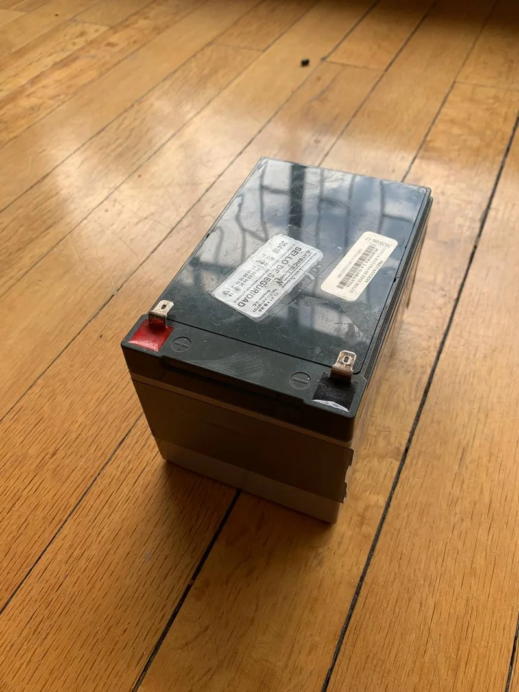
Paso 4 → ¿Cómo se estima las características de un controlador?
Para esto tenemos que calcular la corriente de entrada y la de salida del controlador, según estas dos ecuaciones:

Para calcular la corriente de entrada solo tenemos que multiplicar 3 valores: *1,25: Un factor de seguridad de 1.25 esto se hace para calcular con un 25% de más de lo necesario para evitar errores por un cálculo muy ajustado. Es una práctica común en ingeniería, sobredimensionar los cálculos por parámetros de seguridad en caso de fallo. *Imod,sc: Corriente unitaria del panel fotovoltaico en condiciones de cortocircuito, se puede encontrar al respaldo del panel. Para este caso es de 2.32 A.
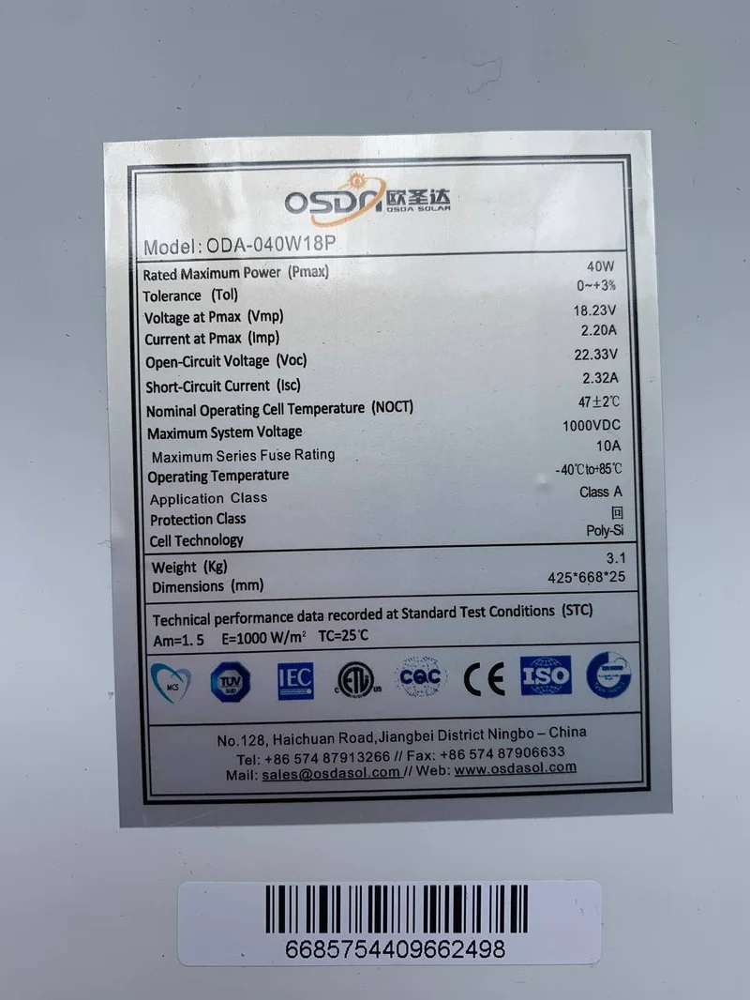
Np: número de paneles en serie. Para este caso son 2.
Calculando tenemos: Ientrada= 1.25*2.32 A.*2 = 5.8 A Para calcular la corriente de salida tenemos que sumar, multiplicar y dividir los siguientes valores:
- 1,25: Un factor de seguridad de 1.25 esto se hace para calcular con un 25% de más de lo necesario para evitar errores por un cálculo muy ajustado. Es una práctica común en ingeniería, sobredimensionar los cálculos por parámetros de seguridad en caso de fallo.
- Pdc: Potencia descarga en corriente continua, es la suma de la corriente de los aparatos que nosotros vamos a conectar y que funcionan con corriente continua. En este caso no tenemos ninguno, así que es 0.
- Pac: Potencia de cargas en corriente alterna, es la suma de la corriente de los aparatos que nosotros vamos a conectar y que funcionan con corriente alterna. En este caso un portátil consume 120W/h y un router consume 15w/h, para un total de 135 W/h
- Ninv: Rendimiento del inversor, alrededor de 90-95%.
- Vbat: Voltaje de la batería. Esto lo podemos leer en la batería seleccionada. Para este caso es de 12V.
Calculando tenemos: Isalida= 1.25*(0+(120+15)/0.95)/12=14.80 A Por último solo tenemos que redondear nuestros cálculos. Ientrada=5.8≃6A Isalida=14.80≃15A Entonces nuestro controlador debería soportar al menos una intensidad de entrada de 6A y una intensidad de salida de 15A. Por eso compramos uno de 20A y un voltaje de 12/24V (se cambia automáticamente).
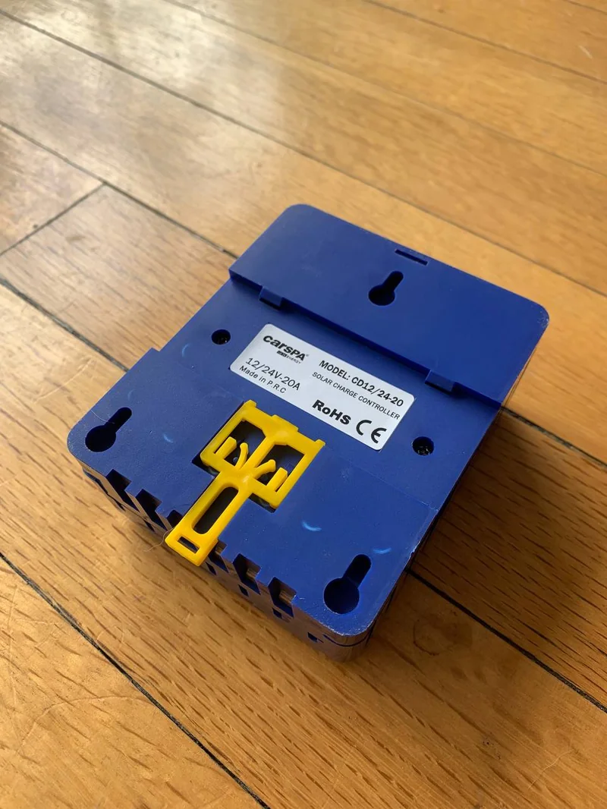
Paso 5 → ¿Cómo se estima las características de un inversor?
Como vamos a utilizar equipo de bajo consumo el inversor a usar es de onda modificada. El cálculo se hace sobredimensionado un 25% de más a nuestro consumo total. Recordemos que el consumo total es de 405W. Así I=V1.25=4051.25=506.25 W Esta debe ser la capacidad mínima del inversor. En nuestro caso compramos uno de 750W.
Paso 6 → ¿Cómo saber qué cable comprar?
Usualmente los cables solares se dimensionan utilizando el término AWG (American Wire Gauges) con el fin de estimar la escala del calibre. Pero para cables solares normalmente el calibre se especifica por su sección ó área en mm². Así en Colombia podemos encontrar desde calibres 2.5mm² hasta 16mm² según el fabricante.
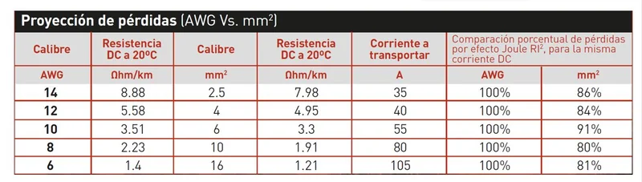
Se debe escoger con relación a la corriente a transportar. En este caso, no transportaremos más de 20A, por lo que está bien un cable de 14 AGW, es decir de 2.5 mm2. En lo que respecta a conectores para nuestro caso, compramos dos, pero dependerá de la configuración que cada uno arme.
Paso 7 → Busca un proveedor
Busca un proveedor de insumos eléctricos y cotiza estos equipos. Además, puedes asesorarte con ellos para saber si los cálculos que hiciste son correctos o si hay alguna otra forma de optimizar su sistema de generación de energía. Compara los costos entre los diferentes proveedores y compra teniendo en cuenta la confianza en el lugar, la garantía y los precios.
¿Cómo usarlo?
Precauciones Ahora que tenemos el motor, la bicicleta, la batería, el inversor, debemos recordar que lo último que se cuenta es la batería.
Una advertencia de seguridad: Sólo debemos conectar uno de los polos a tiempo, para que no nos tome la corriente. Es bueno trabajar con guantes de caucho ya que nos aísla respecto a una posible electrocución. Te recomendamos leer la sección Precauciones básicas al trabajar con electricidad
Conectar el circuito El motor tiene un polo negativo y uno positivo, es importante identificar cuál es el cuál para armar el nuevo circuito. Generalmente el positivo está representado con el rojo y el negativo con el negro. En el caso de la conexión de un motor debe identificar hacia dónde gira cuando se conecta de un forma u de otra, el motor debe quedar conectado de tal forma que gire en el mismo sentido que girará la bicicleta, es decir “hacia adelante”. Recuerda que para esta solución lo que estamos haciendo es funcionar de manera inversa un motor, es decir al hacer girar el motor se creará un campo electromagnético que interectuará con los imanes permanentes del motor eléctrico, generando una corriente eléctrica.
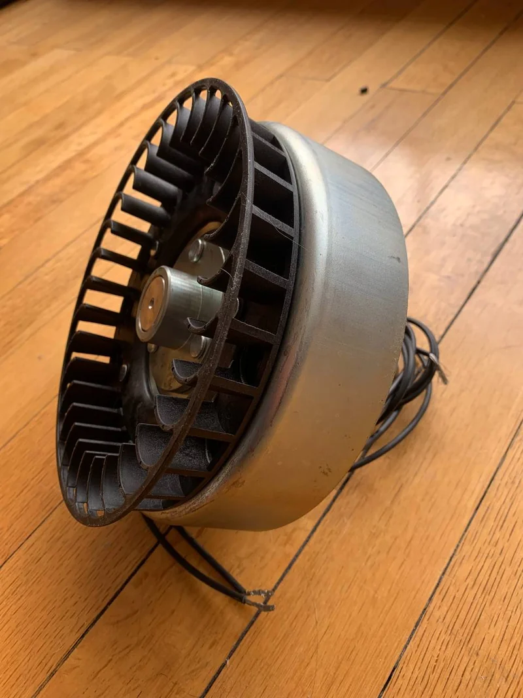
Ahora, conecta los cables negativos y positivos que salen del motor al controlador, en este está claramente señalado donde se conecta cada cable. Luego corta dos cables y pela sus puntas para hacer la conexión hasta la batería.
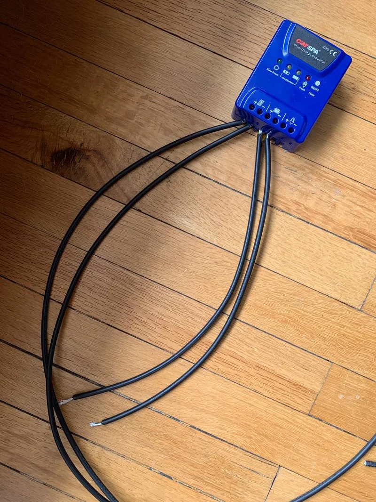
Conecta ahora estos cables que salen del controlador a la batería, respetando la conexión de positivo y negativo.
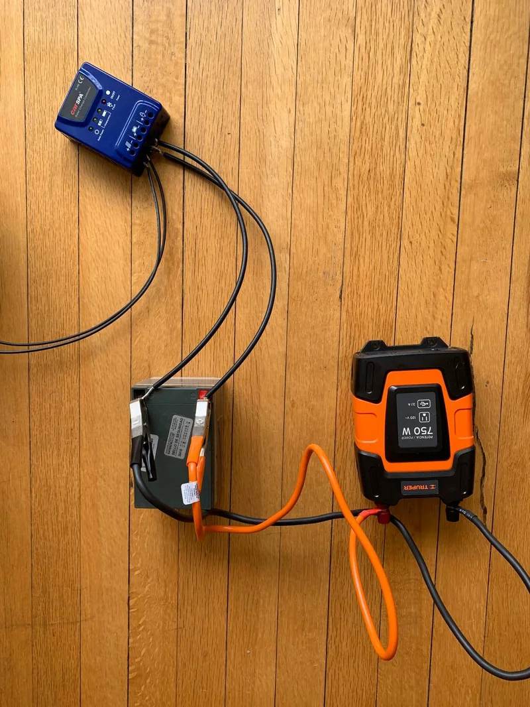
Cuando los hayas conectado, une los cables del inversor a la batería y así es como tendrás tu sistema listo. Una vez esté ensamblado todo el sistema vas a poder conectar el computador o el router al inversor.
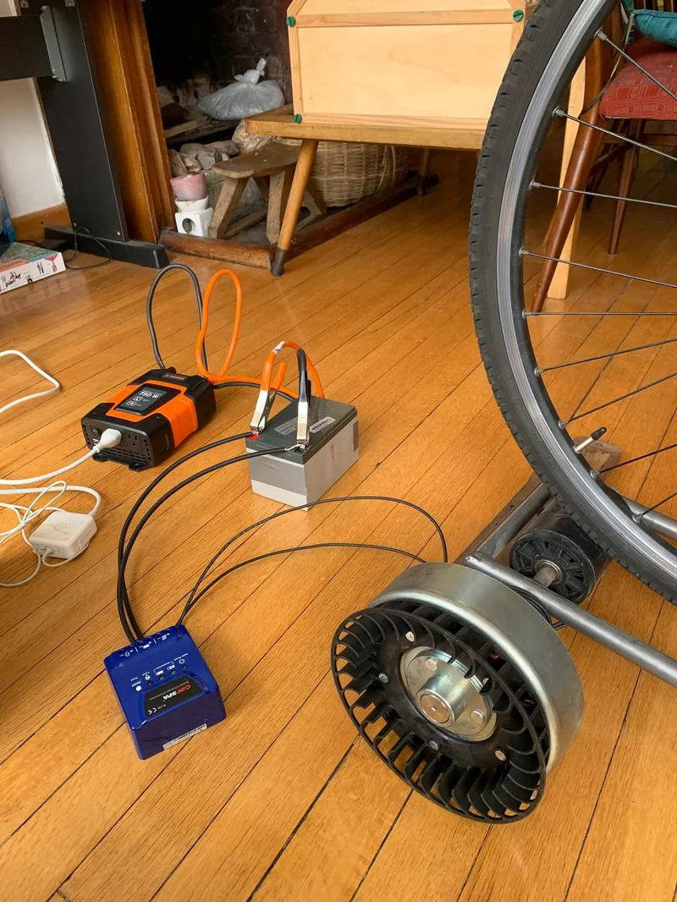
Otros internets posibles
Con esta solución lograrás tener electricidad para alimentar tu SOLE, recuerda que esa solución está calculada con el ejemplo del consumo eléctrico de un router y un computador. Si quieres tener electricidad permanente para más equipos debes hacer tus propios cálculos.
¿Por qué podría funcionar esta solución?
Esta solución solo permite tener independencia energética de un router y un computador portátil durante 3 horas en la noche, en caso de que el panel haya captado luz solar a lo largo del día. Si lo estas utilizando de día, este tiempo se puede extender, ya que el panel estará cargándose de manera constante y cuando tu usas los dispositivos eléctricos se descarga.
Soluciones relacionadas
- ¿Tu comunidad necesita apoyo económico para conectarse a Internet? →
- ¡Aprende a diseñar una invitación exprés sin ser un experto! →
- ¿Cómo usar el juego para aprender a cuidar equipos en comunidad? →
Recuerda que en Voltaje ⚡⚡ puedes encontrar muchas soluciones más para conectarte sin miedo a usar el internet en grupo. ¡Anímate a seguir navegando! Ver más soluciones →